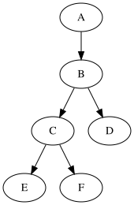
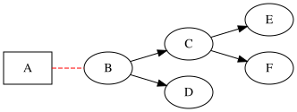
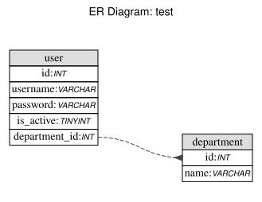

开发人员在项目中最头大的事情，恐怕非写文档莫属了，第一要排版，第二要画图，排版这件事，有了mark down以后，大大降低了我们排版所花的心力，而画图却仍然是个头疼的活。一方面画图本身，拖拽组件、调整布局，另一方面，对于图形的版本管理也一直是个难题，我们很容易使用版本控制工具例如git、svn等来查看文本文件每次修改了什么，但对图做了什么调整改动，却没办法diff。
这里我们隆重推荐Dot Language，一款用代码来画图的语言，也是开发人员的福音。
我们看下面这幅图：

源码如下：
1
2
3
4
5
6
7
| digraph abc {
"A" -> "B";
"B" -> "C";
"B" -> "D";
"C" -> "E";
"C" -> "F";
}
|
可以看到，代码非常简明表意。
可能有人会说，这个图太过简单，我们画图的时候，希望有一些更高级的要求，比如，有些箭头没有，比如我的图，是从下到上的，或者我需要线条样式、颜色不同，没问题，dot language支持更换样式。
我们来看下面这幅图：

源码如下：
1
2
3
4
5
6
7
8
9
10
11
| digraph abc {
fontname = "Helvetica";
fontsize=8;
rankdir=LR;
"A" [shape="record"]
"A" -> "B" [style="dashed", color="red", arrowhead="none"];
"B" -> "C";
"B" -> "D";
"C" -> "E";
"C" -> "F";
}
|
其中，rankdir=LR;表示从左到右，相应的还有从上到下（TB）从下到上（BT）。
arrowhead=”none”为无箭头。
这样一来是不是觉得画图很容易？
用过sequel pro这款数据库客户端软件的人，大多都使用过它导出过ER图，细心的用户会注意到，在选择导出格式时，有个选项，便是导出为dot文件。我们来感受一下：
1
2
3
4
5
6
7
8
9
10
11
12
13
14
15
16
17
18
19
20
21
22
23
24
25
26
27
28
29
30
31
32
33
34
35
36
37
38
39
40
41
42
43
44
45
46
47
| // ************************************************************
// Generated by: Sequel Pro
// Version 4541
//
// http://www.sequelpro.com/
// https://github.com/sequelpro/sequelpro
//
// Host: 127.0.0.1 (MySQL 5.7.15)
// Database: test
// Generation Time: 2017-04-18 08:25:30 +0000
// ************************************************************
digraph "Database Structure" {
label = "ER Diagram: test";
labelloc = t;
compound = true;
node [ shape = record ];
fontname = "Helvetica";
ranksep = 1.25;
ratio = 0.7;
rankdir = LR;
subgraph "table_department" {
node [ shape = "plaintext" ];
"department" [ label=<
<TABLE BORDER="0" CELLSPACING="0" CELLBORDER="1">
<TR><TD COLSPAN="3" BGCOLOR="#DDDDDD">department</TD></TR>
<TR><TD COLSPAN="3" PORT="id">id:<FONT FACE="Helvetica-Oblique" POINT-SIZE="10">INT</FONT></TD></TR>
<TR><TD COLSPAN="3" PORT="name">name:<FONT FACE="Helvetica-Oblique" POINT-SIZE="10">VARCHAR</FONT></TD></TR>
</TABLE>>
];
}
subgraph "table_user" {
node [ shape = "plaintext" ];
"user" [ label=<
<TABLE BORDER="0" CELLSPACING="0" CELLBORDER="1">
<TR><TD COLSPAN="3" BGCOLOR="#DDDDDD">user</TD></TR>
<TR><TD COLSPAN="3" PORT="id">id:<FONT FACE="Helvetica-Oblique" POINT-SIZE="10">INT</FONT></TD></TR>
<TR><TD COLSPAN="3" PORT="username">username:<FONT FACE="Helvetica-Oblique" POINT-SIZE="10">VARCHAR</FONT></TD></TR>
<TR><TD COLSPAN="3" PORT="password">password:<FONT FACE="Helvetica-Oblique" POINT-SIZE="10">VARCHAR</FONT></TD></TR>
<TR><TD COLSPAN="3" PORT="is_active">is_active:<FONT FACE="Helvetica-Oblique" POINT-SIZE="10">TINYINT</FONT></TD></TR>
<TR><TD COLSPAN="3" PORT="department_id">department_id:<FONT FACE="Helvetica-Oblique" POINT-SIZE="10">INT</FONT></TD></TR>
</TABLE>>
];
}
edge [ arrowhead=inv, arrowtail=normal, style=dashed, color="#444444" ];
user:department_id -> department:id ;
}
|
生成图形如下：

好，说了这么多dot语言的强大之处，接下来我们看看如何把文件转化成图片。
- 准备好你的dot文件
- 去官网下载并安装http://www.graphviz.org/Download..php
- 在你的dot文件所在的路径下，执行：dot -Tpng 文件名.dot > 图片名.png，图片就生成好了。
By the way，如果你不想给本机安装dot，那么也可以直接拉docker镜像来操作，写一段shell帮助生成，也很方便，如下：
1
2
3
| WORKING="/backup"
IMG="themarquee/graphviz"
docker run --rm -w $WORKING -v $(pwd):$WORKING $IMG dot $@
|
此时，相信你已经重新拾起了画图写文档的信心，那么参考官方文档，查看更多酷炫的功能吧：
http://www.graphviz.org/content/dot-language